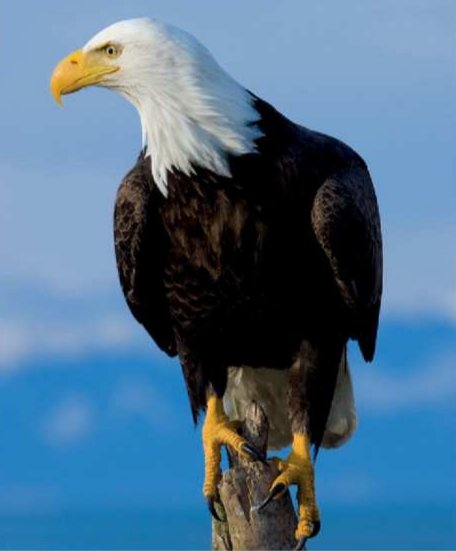
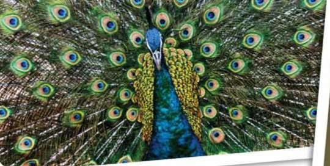
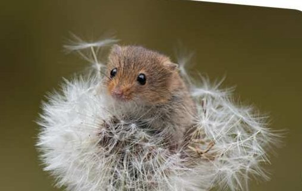
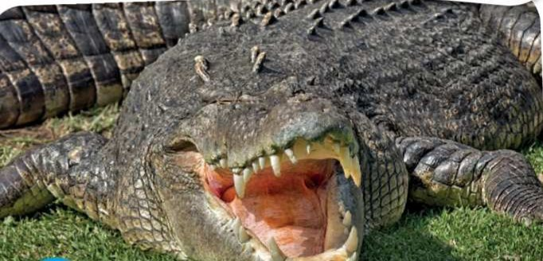
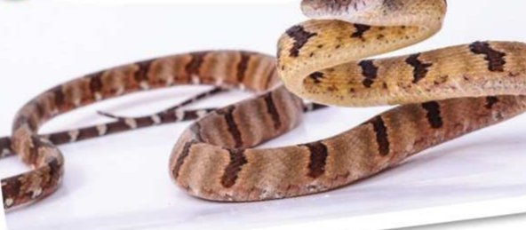
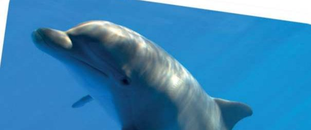
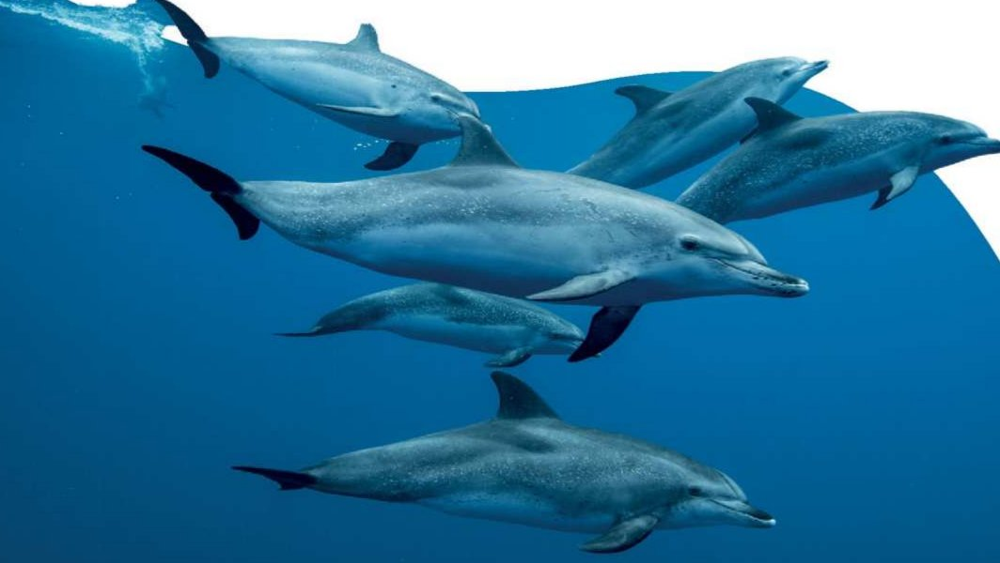

Language in action: watch a video about baby animals and learn was / were and there was / there were. Vocabulary and listening: learn twelve adjectives to describe animals and listen to a podcast about some clever dolphins.
1. What colour was the flamingo when it was a baby?
| was / were | there was / were | |
|---|---|---|
| + | He was a little baby once. They were little babies called tadpoles. |
There was a lesson about baby animals. There were cute baby animals. |
| − | He wasn't pink as a baby. His parents weren't worried about that. |
There wasn't a cuter baby animal than this seal. There weren't any baby butterflies. |
| ? | Was the water clean? Yes, it was. / No, it wasn't. Were the forests big? Yes, they were. / No, they weren't. |
Was there a baby seal? Yes, there was. / No, there wasn't. Were there any wolves? Yes, there were. / No, there weren't. |
1. We use (there) for singular nouns and (there) for plural nouns in the past.
2. We use (there) was / were + not for .
3. The word order is in questions.
2. There were 36 axolotls per square km in the lake in the past.
There were 36 axolotls per square km in the lake in the past. There were .
3. There were 15,000 maned wolves in Brazil in the past.
There were 15,000 maned wolves in Brazil in the past. There were almost .
4. Monk seals were hungry in the past. There weren't a lot of fish for them to eat.
Monk seals were hungry in the past. There weren't a lot of fish for them to eat.
5. In the past, there were about 700 monk seals.
In the past, there were about 700 monk seals. There were .
You can use some words more than once.
Must reads

Bald eagles were in danger in the past but they aren't now!
In the 1960s, only a few hundred bald eagles in the USA. Scientists happy. They very worried. The future good for bald eagles.
After working hard for a long time, some good news. In 2007, the bald eagle on the list of animals in danger. The scientists' work easy, but it a success!
2. What / favourite animal / when / you / six?
3. Who / best friend / when / you / eight?
4. When / your last holiday?
Think of a zoo, a farm or a park you visited. What animals were there? Say three things: There was … · There were … · There weren't any …

1.

2.
3.

4.

5.

6.
It's quiet and fast. It sometimes lives in houses.
NinaIs it a mouse?
Animal 1
Animal 2
Animal 3

1. What can dolphins do?
2. Do you think dolphins can understand people? Why / Why not?
2. Where were Kai and Mateo?
3. What was noisy?
4. Who was in a boat?
5. How long were the dolphins with Luna?
2. Where were Kai and Mateo?
3. What was noisy?
4. Who was in a boat?
5. How long were the dolphins with Luna?
There were two people and a dog on a kayak in the sea.
NinaThere was a group of seven dolphins.
Would you like to see a dolphin — or another sea animal? Why?
1. Polar bears weigh about …
2. Polar bears live in the …
3. Polar bears eat about … of food in a week.
Churchill is a town on the Hudson Bay in Canada. Every October, November and December, it has special visitors: polar bears! They can't hunt seals until it is colder and there is more ice, so they visit the town looking for food.
In 2021, there were 870 people in Churchill. Around 12,000 tourists come every year. They come to see the polar bears – there are over 600 in the area and they often come into the town. When this happens, the police ask people to leave their cars open in the town. Then people can jump inside if they need to escape!
In 2023, polar bears came into Churchill earlier than usual. By the summer of that year, there were 76 phone calls to the police. To keep people safe – and the bears – wildlife experts took three of the animals to a place outside the town.
The worst year was 1983. On 29th November, a young male bear killed a man in Churchill. It is the only time this happened. But sometimes, bears can attack when they think people want to hurt them or their babies. In 2013, a bear attacked a man in the street. Experts moved it to outside the town. The bear was safe and the man was soon fine as well.
What's special about the town of Churchill?
2. A female animal is a girl and a is a boy.
3. People who are know a lot more about a subject than other people.
4. Hungry lions are dangerous and they sometimes people.
5. Whales often other mammals, like seals, at night.
6. The man saw the polar bear in the street and ran into a shop to .
2. There are more people living in the town than tourists.
3. When the polar bears come into the town, people can hide in cars.
4. When the polar bears are dangerous, experts take them to a place outside the town.
1. Would you like to visit Churchill to see the polar bears? Why / Why not?
2. Why do you think there are more bears coming to the town than before?